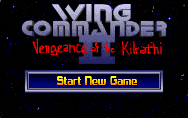
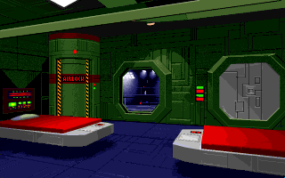
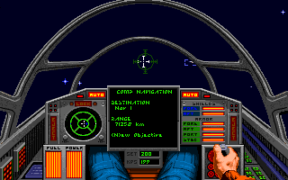

名稱：銀河飛將2：帝國逆襲 (Wing Commander 2: Vengeance of the Kilrathi，英文版)
簡介：Origin 1991年出品的太空飛行戰鬥模擬遊戲，同年推出「語音（Speech Pack）」及
「特別任務1（Special Operations 1）」資料片，1992年再推出「特別任務2（Special
Operations 2）」資料片，台灣由智冠代理進口 [待補]。



備註：本版為豪華版。要玩主程式，請輸入PLAY.BAT；要玩特別任務1，請輸入PLAY1.BAT；
要玩特別任務2，請輸入PLAY2.BAT。
保護：無
備註：豪華版（Deluxe Edition）光碟版內容同磁片版4.0版+特別任務1(1.3版)+特別任務2+
語音資料片。
備註：電腦速度不可太快，否則難以操控。